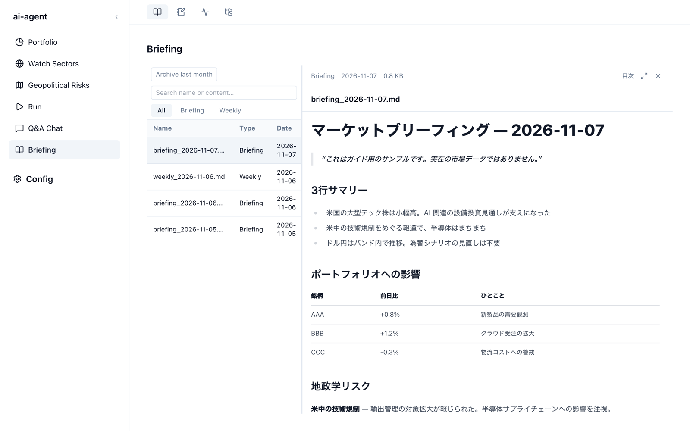

ブリーフィングを読む（Briefing）
Briefing 画面には、これまでに生成したブリーフィングと週次リキャップが新しい順に並びます。行を選ぶと右側に本文が開き、見出しの目次から読みたい箇所へ移れます。

一覧
一覧には Name（ファイル名）、Type（種類）、Date（日付）が並びます。
- 検索 — 上部の Search name or content… に入力すると、ファイル名と本文の両方から部分一致で絞り込みます。
- 種類で絞り込む — All / Briefing / Weekly のタブで、日次のブリーフィングと週次リキャップを切り替えます。
- 一覧と本文の境目をドラッグすると、一覧の幅を変えられます。
| 種類 | ファイル名 | 中身 |
|---|---|---|
| Briefing | briefing_YYYY-MM-DD.md | 日次のブリーフィング |
| Weekly | weekly_YYYY-MM-DD.md | 週次リキャップ（金曜日に生成） |
本文を読む
本文の上部には、種類・日付・ファイルサイズが表示されます。右上のボタンで表示を切り替えます。
| ボタン | 動き |
|---|---|
| 目次 | 見出しの一覧を表示し、選んだ見出しへ移動します |
| 拡大（⤢） | 本文を画面いっぱいに広げます |
| 閉じる（×） | 本文を閉じて一覧だけに戻ります |
表や見出しは Markdown のまま整形して表示されます。読みながら質問したいときは、Q&A Chat を使うと本文を横に並べたまま質問できます。
先月分をアーカイブする
Archive last month を押すと、先月分のブリーフィングを zip にまとめて Google Drive へアップロードします。アップロードには rclone の設定が必要です。手順はリポジトリの briefing-archive.md を参照してください。
手元に残すだけなら Export data で。
rclone を使わずにブリーフィングやジャーナルをまとめて保存したいときは、Config → Export data から zip をダウンロードできます。
ファイルの場所
ブリーフィングは Markdown ファイルとして、データの保存場所の output/briefing/ にあります（npx 版なら ~/.brief-lens/output/briefing/）。エディタで直接開いても構いません。